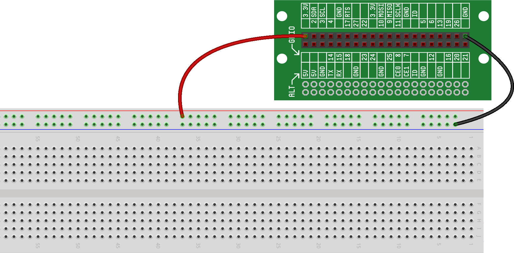
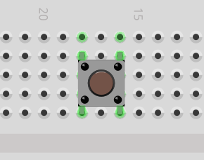
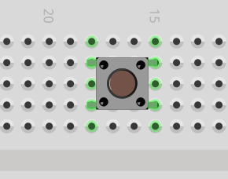
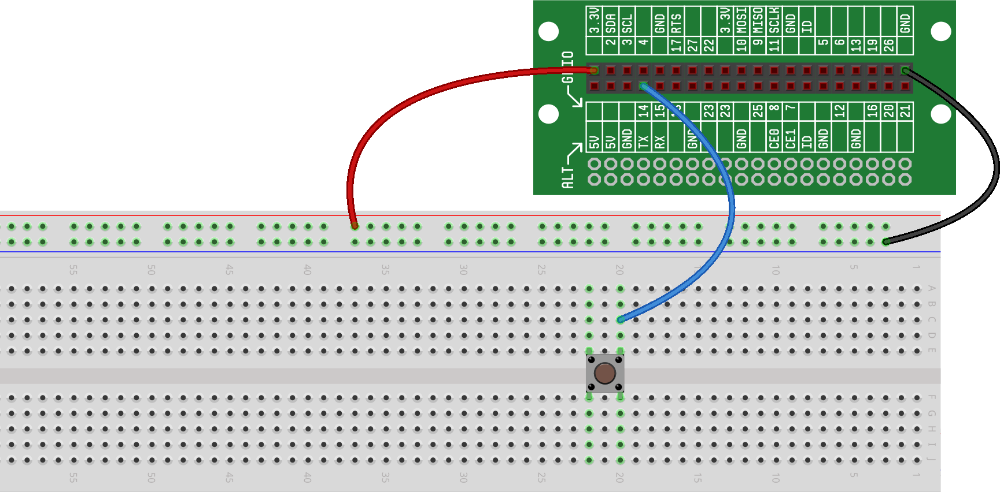
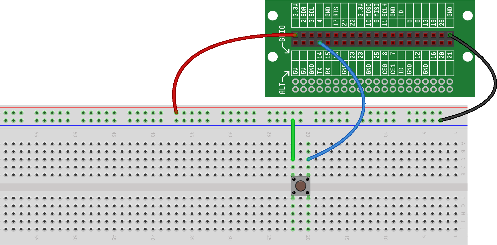

In this project, we will use GPIOs to get input from a pushbutton into our software.
Before jumping into this project, we very strongly recommend that you read , as these concepts will be the basis for this project and nearly all future RaspberrySTEM projects.
In the previous project, we saw how GPIOs can be used as outputs to control components attached to the Raspberry Pi (like our LED). GPIOs can also be used as inputs to take information from external components; that input can then be acted upon by the Raspberry Pi and appropriate actions can be taken.
In , we introduced the idea of reading button state based on using GPIOs as inputs and then provided a schematic for the circuit we'd need to accomplish this. It turns out that implementing that circuit on our breadboard is easy. Let's give it a try...
First, we start with an empty breadboard, with power and ground wired from the Lid Connector Board, like this:
 With our breadboard empty, here is how we build our circuit and then use code to get input from the button through the GPIO:We start by placing a button on the breadboard. Remember, it is important that the button is oriented correctly -- the two independent sides of the button must sit on different connect strips, as follows:
|  |  |
| CORRECT | WRONG!!! |
Next, we connect one side of the button (it doesn’t matter which one, as the internal components of the button are symmetrical) to a GPIO. In this example, we’ll connect the button to GPIO14.
Finally, we connect the other side of the button to ground.
That’s it for the wiring – pretty simple, right?
Now that the circuit is wired, we can write the code to get the GPIO state (low or high):
In this most basic example, we are reading the GPIO a single time (the moment the program is run) and we are printing the state of the button at that moment. Try running the program a couple times, either holding down or not holding down the button at the moment the program is run.
You may notice that this example is similar to the example. But in this case, we configure the GPIO as a input instead of an output:
In Line 2: We're configuring GPIO 14 as a button input.
In Line 3: We're getting the state of the button, and printing it.
We'll look at these concepts again in more detail in upcoming projects.
To make the program a little more interesting (and convenient!), we can insert a loop so that, instead of just reading the state of the GPIO one time, we can continually read and print the state of the GPIO for as long as the program is running.
Here’s what that code would look like:
Run this program and then alternate between pressing and not pressing the button. Take a look at the output window – you should see an indication of when the button is pressed and when it is released.
You may have noticed that we used a new programming concept above:
while True:
We'll discuss exactly how this works in a future project, but for now, just know that using this line of code will force the block of code below it to be repeated over and over, forever.
When you're done testing your button, you can stop the program by pressing the square STOP icon in the upper-left-hand corner of the code window (this icon replaced the PLAY icon while the program was running).